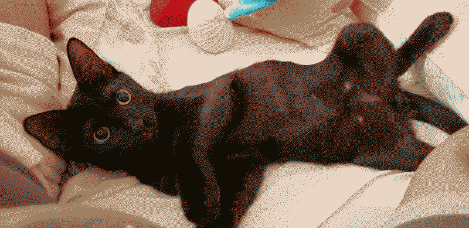

i started my 2nd year of uni this week. i find it its always nice to be back here.
the 1st class i had this week was calculus. i feel like taking 4 straight days of calculus is gonna be a bit crazy to me. and i will def need to study a LOT for this class. but hopefully with my determination i will be okay.
i'm also taking introduction to programming this semester as well! the professor reminds me a lot of my sister for some reason. the way she talks and her mannerism and all of that. i've only taken 1 class with her so i can't really say much about her but she does seem very nice. i remember last semester, when i visited my pre-calculus professor's office, i overheard a conversation from another office. it was my current programming professor telling another student step by step how to use git on a terminal which i found pretty funny at that very moment. she mentioned in class we are going to use git / github classroom which will be pretty interesting to me since we didn't use this for my last computer science class. she asked if we knew how to use it and this time i can't really say if i was 1 of how many people that raised their hand because i'm sitting at Almost the front of the classroom.
the programming language we're gonna be using (and learning about, I WILL BE LEARNING about this) is C++. i don't know anything about C++. if there's Anything related to C++ that i know about is that minecraft bedrock edition is coded in C++ but that is literally it, that's all i know. and that's not even related to C++ itself, that's just minecraft related!!!!! a friend from that same class (who's also interested in webdev) told me i shouldn't worry too much about it too much because C++ is a bit more alike to javascript compared to python which was the language we were using in our past compsci class. and i'm like... well if you say so! i'm still SUCH a beginner in javascript though i've definitely learned so many things on my own that i've been able to apply to my site! i honestly need to keep at it when it comes to javascript. probably continuing the book i was reading would be the best since i already know a couple of things.
calculus and programming are the last classes i have to take and pass so i can FINALLY do a full transfer to my current university and be considered a regular student. AND SO I CAN APPLY FOR STUDENT AID!!!! 💵 i am honestly insanely lucky i was able to get admitted in the first place given my awful record at my previous college. but oh mein gott my savings... my savings that will no longer exist past this semester which is why i'm dying to be able to pay my uni with goverment money instead of my own. its kind of the same with food stamps. i swear the food tastes better knowing i didn't have to pay a single cent for it from my pocket.
my ac
fine
new EP of severance TOMORROW!!!
style savvy games once again during my uni commute
winter break wrap-up20.jan.25
uni classes are about to start pretty soon so i wanna talk about how i spent my winter break. btw can we talk about how fast time is passing? good lord. for me, it was new year yesterday.
when i first started winter break, i said i would work more on my site but i never did that if i'm being quite honest, i didn't have much motivation to work on my site during this time. can't really tell you why that is... i def had the time to work on them. but i just didn't want to... i kinda just wanted to chill for the time being.
side tangent: but i've also been having problems with spam on my chat and guestbook soooo i will def be taking out the chatbox next time i update the homepage. and replace the guestbook with atabook so moderation can be easier. don't really mind these changes that much. but it's def just a bit annoying i don't really wanna be checking my site on the daily to see if someone wrote down a new slur or a random ass link. though i do smile at the messages i get that aren't either of these things. thank you to those
ANYWAYS. my winter break. besides getting sick, i had a lot of fun at a amusement park (a very very small amusement park) that opens up every december. the attractions weren't all that good and honestly most of them were just what i call "dizzy machines". but again, i had fun.
view from the ferris wheel
already talked about this in my previous log but i did spend like a good half of my winter break sick. because of this i watched a couple of things like revolutionary girl utena and my yearly rewatch of madoka magica and rebellion. watching so much shit about magical girls, i kinda entered into a madoka hyperfixation (that i am still going through to this day but a bit more lowkey.) i bought rebellion digitally and even thought about getting the blu-ray but i'm a bit scared of getting one that is region locked. and i run with an older blu-ray player too so i think it's best to hold on on that one.
as for video games, i'm still playing the same stuff. EXCEPT i smoked some of that balatro crack. that game is crazy fun though i do feel like i am a tiny bit stupid for it. but that's fine.
i got to resume my fallout new vegas save which i'm pretty sure i hadn't properly played since summer 2024. i got all of the DLCs since i'm pretty much (almost) done with the main storylines but my girlfriend recommended me to get the DLCs first before finishing the main game. whatever you say, beautiful. been really back at it though! hopefully i'll keep playing it on my free time when i start studying again. but man i feel like i can in new vegas for hoursssss. what a fun game man.
started watching twin peaks the return with my girlfriend and we've been having such a blast. this show is fucking scary and insane and i love it so much. i was so sad when i found out about david lynch's passing :( twin peaks has been the only work of his that i've been familiarized with but from videos i've seen and even to his silly acting in the show, he just seems like a very cool dude. rest in peace david lynch
after watching the animated opening of a TV show called severance i got super curious and started watching it yesterday. it if safe to say that i binge watched the entire thing. and oh my god that show was so fun to watch. now i just gotta keep up with the weekly episodes but WOW. it holds such an interesting premise.
i've been having a lot of fun too spending so much time with my little meow meow steve minecraft. he's gotten so big too!!!! i really appreciate his company. my silly.

i think that is pretty much it! been hanging out with my wonderful girlfriend. trying to get back in the groove of listening to new music more often as well. i am currently in love with asian glow's 11100011. i am very excited to see the 2 friends i have made on campus once again! we coordinated to take the same classes together so at least there is that to look forward to among other things :3 peace and love, everyone.
i think i have spent the majority of december sick. within the last two months, i have gotten sick 3 times... 2 times with a cold, and then i got the flu. i blame my retail job for all 3 times i got sick. it sucks. specially when you're sick and you have to go to work like that or else they'll remove attendance points out of your profile which can make you get terminated. i love life. i don't ever wanna work while sick but it's either that or getting fired and finding another ass job.
the sickness calendar. highlighted are the days that i have been sick. orange highlights are when i got sick with a cold. pink highlight for the flu.
joy and whimsy
i, at the very least, was able to enjoy the 25th relatively healthy. i spent sometime with my family and my girlfriend. my dad got me a samsung galaxy watch 6. my first and previous smart watch was a fitbit versa 2 watch. it still works wonders to this day. i find it a pretty cute and charming watch overall, but the galaxy watch has a lot of new stuff that my fitbit didn't have. including more apps and a speaker! which means i can now pick up phone calls from my silly ass watch. awesome!
my beautiful WONDERFUL girlfriend got me this little prince lego set ?!?!?!? it took me 2 hours to build it and it was pretty easy! i had never built something like this so this was a very pleasant surprise to me. i actually cried when helena handed it out to me. the little prince is such a precious story to me. i really love this little guy.
and last but not least, i algo received a beautiful postcard from Arachne!
just wanted to share the amazing drawing she did of mizu here.
tired, again
then the next day my whole body started aching. uh oh. this time it was a type A flu. given that it is more severe than just a cold, i did stay home instead of sacrificing myself (AND OTHER PEOPLE...) by going to work. and man. do i miss being in my bed while sick.
i took advantage of this and started watching things i've been meaning to watch for a while. i managed to finish revolutionary girl utena as well as adolescence of utena. and let me just tell you. wow. that really was art. it left me with the same feelings that binge watching madoka magica back in 2016 made me feel. speechless and a little bit confused. because of this, i am also in the middle of watching the madoka movies (beginnings and eternal) since i've never watched them because it's just the same as the anime but with a few extra steps. and that night all of a sudden...
happy ne- *explodes like a power generator*
during the morning of december 31st there was a massive blackout throughout Puerto Rico because of the incompetent company that handles our power grid. sigh. i spent 27 hours with no electricity. during new year's of all days. lovely.
i went outside during midnight, the entire street was just pitch black, but people still lighted up those fireworks they have been waiting to light up til now. i didn't have a lot of phone signal for the majority of the day so i just said "happy new year" to steve and went back to bed to listen to my CDs. having a battery power CD player and a couple of your favorite albums WILL save you.
so, how was my 2024?
honestly i got a lot done this year. you can see a pretty well summarized retelling of the past year on my scrapbook. it was definitely a bit hectic compared to other years. i still miss my grandma a lot and i think about her almost every day. but i also managed to get back into university and i've been really enjoying my time there. i got to make new friends too! i think it has also helped me to take my mind off a bit from my grandma's passing. nonetheless, i think this year i have been the happiest i have ever been in a while. and to me that is a huge achievement.
this year i also got a WHOLE lot more of messages regarding my site. thank you very much to everyone who has written me a nice message even if i don't answer it, i still appreciate them.
for 2025 i am hoping to fully develop my brain and also get my first tattoo.


 💵
💵 i am honestly insanely lucky i was able to get admitted in the first place given my awful record at my previous college. but oh mein gott my savings... my savings that will no longer exist past this semester
i am honestly insanely lucky i was able to get admitted in the first place given my awful record at my previous college. but oh mein gott my savings... my savings that will no longer exist past this semester  which is why i'm dying to be able to pay my uni with goverment money instead of my own. its kind of the same with food stamps. i swear the food tastes better knowing i didn't have to pay a single cent for it from my pocket.
which is why i'm dying to be able to pay my uni with goverment money instead of my own. its kind of the same with food stamps. i swear the food tastes better knowing i didn't have to pay a single cent for it from my pocket.
 if i'm being quite honest, i didn't have much motivation to work on my site during this time. can't really tell you why that is... i def had the time to work on them. but i just didn't want to... i kinda just wanted to chill for the time being.
if i'm being quite honest, i didn't have much motivation to work on my site during this time. can't really tell you why that is... i def had the time to work on them. but i just didn't want to... i kinda just wanted to chill for the time being. i don't really wanna be checking my site on the daily to see if someone wrote down a new slur or a random ass link. though i do smile at the messages i get that aren't either of these things. thank you to those
i don't really wanna be checking my site on the daily to see if someone wrote down a new slur or a random ass link. though i do smile at the messages i get that aren't either of these things. thank you to those 
.png)
.png)


 2 times with a cold, and then i got the flu. i blame my retail job for all 3 times i got sick. it sucks. specially when you're sick and you have to go to work like that or else they'll remove attendance points out of your profile which can make you get terminated. i love life. i don't ever wanna work while sick but it's either that or getting fired and finding another ass job.
2 times with a cold, and then i got the flu. i blame my retail job for all 3 times i got sick. it sucks. specially when you're sick and you have to go to work like that or else they'll remove attendance points out of your profile which can make you get terminated. i love life. i don't ever wanna work while sick but it's either that or getting fired and finding another ass job.


 even if i don't answer it, i still appreciate them.
even if i don't answer it, i still appreciate them.